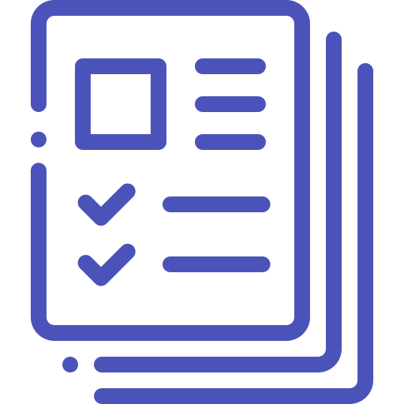
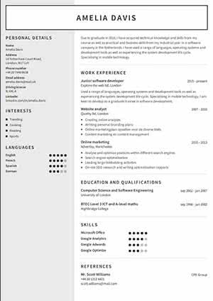
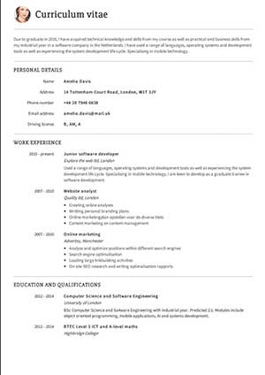
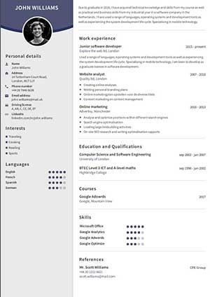
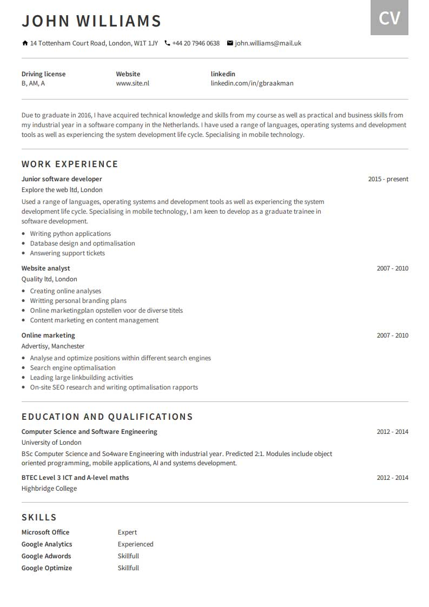
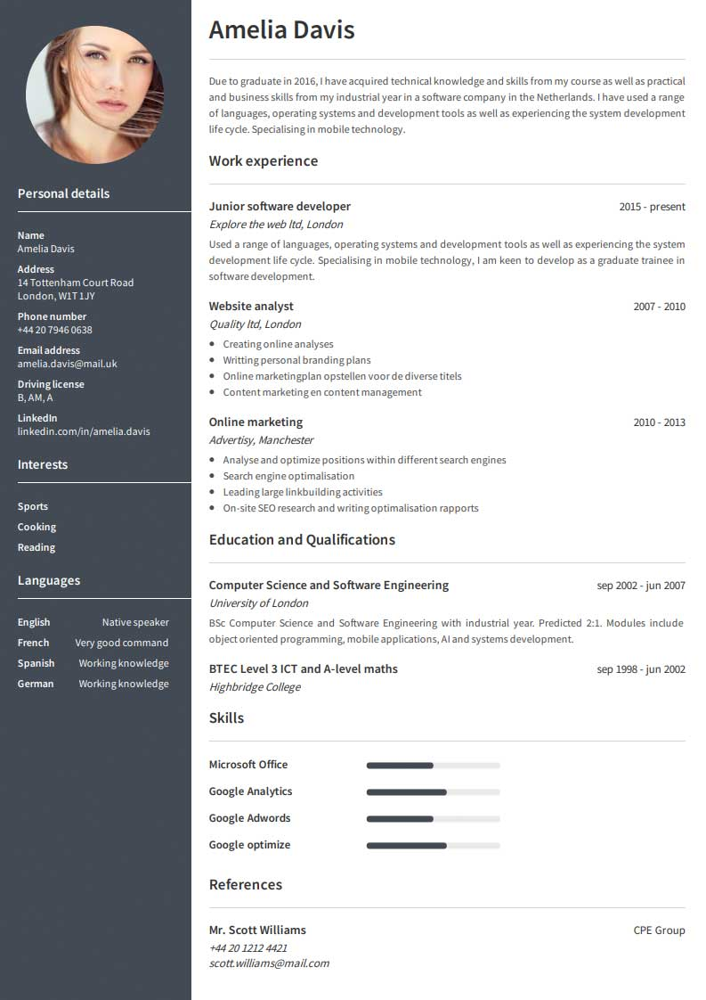
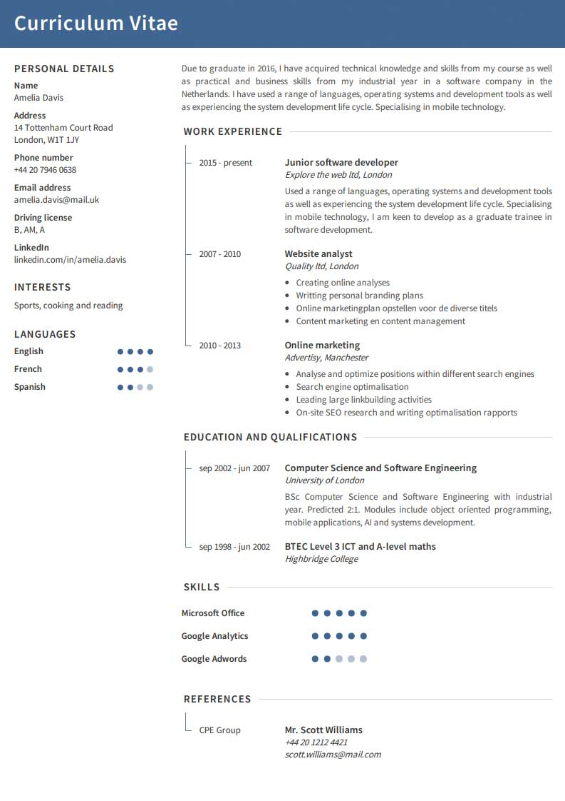
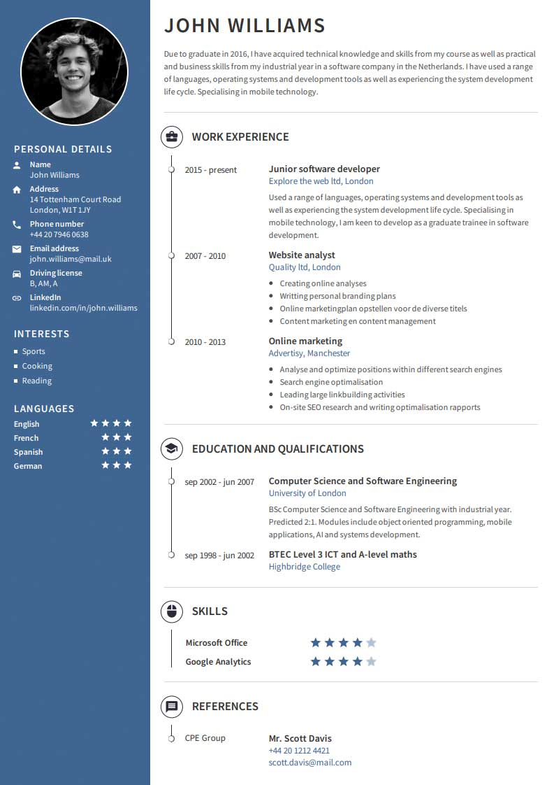
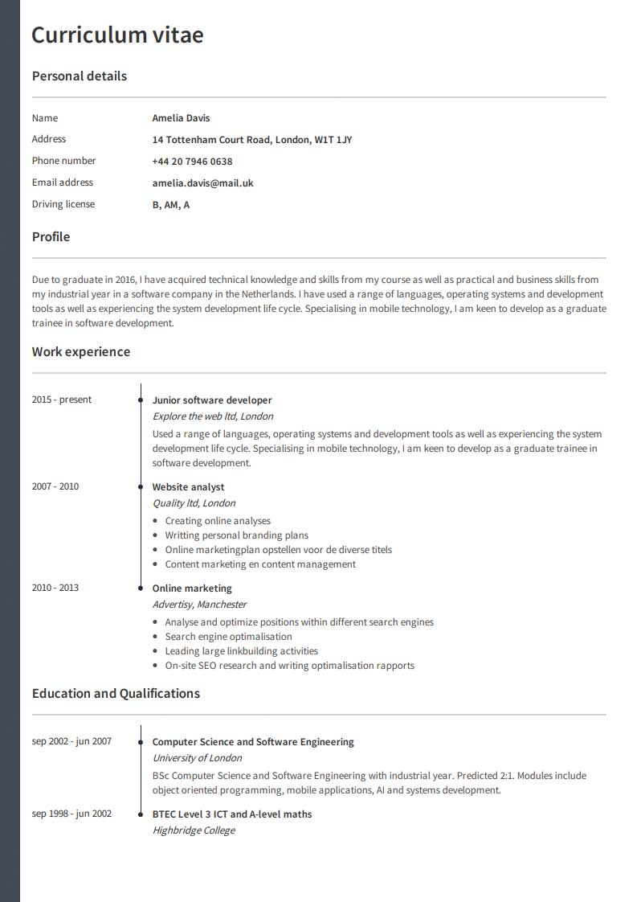
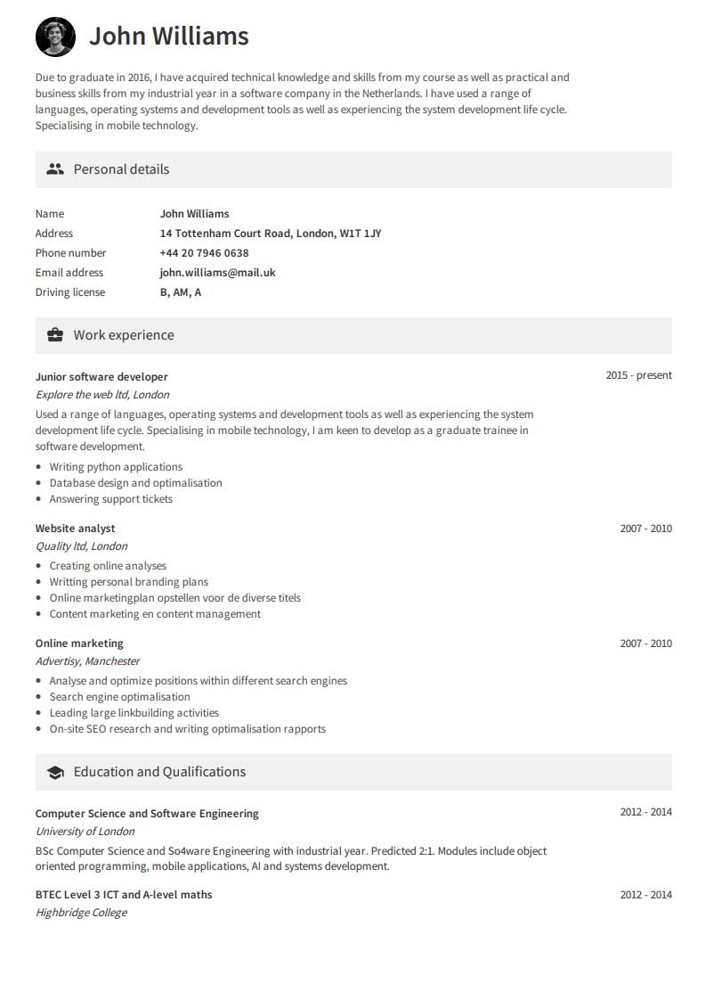

Create your professional Resume with CV maker
Create your very own professional Resume and download it within 15 minutes.
Create your ResumeQuick and easy resume builder
With our online CV maker, it is simple for anyone to quickly
create a professional resume. Enter
your personal details and begin filling out your resume content.
Finally, choose one of our 36
available resume layouts,
and download your resume.
More likely to land a job
With a representative and professional resume, you will stand
out amongst all other applicants.
You are probably more likely to be invited to an interview with
a professional Resume.

Organize your applications
Often, it is important to be able to tailor your resume based on
the job you wish to apply for.
With CV maker, you can create and manage several different
resumes in an organised way
through your own personal account hub.
What do our users say about CVmaker?
They all found their dream job, thanks to CVmaker:
Dylan
Undoubtedly, CVmaker was a
great success for me. Within
15 minutes, I had created my
resume and sent it with the
email program.
Function Management
Jay
I received positive comments
on my resume and found a
great job very quickly. I
certainly recommend
CVmaker!
Function HR Manager
Kate
I find it very handy that I can
organise all of my resumes
and applications in one place
with CVmaker. It holds such
beautiful resume templates!
Function Marketing
Users of CVmaker are hired at top companies such as
Increase your chances of a job considerably
With CV maker, you can quickly and easily create a distinctive and professional resume within 15 minutes.
Create your ResumeMake a resume that stands out
Increase your chance of getting a job by creating your resume with our
professionally-designed resume templates and
complementary
colour schemes.









View all of our available professional resume sample templates.
CV (Curriculum Vitae)
Information, Frequently Asked Questions, and Tips on Your resume.
What is a CV or resume?
CV or resume is an abbreviation of the Latin words 'curriculum
vitae', which mean 'life course'. A professional
resume provides a summary and a good overview of someone’s life.
Your resume includes your education(s) and qualifications, work
experience, skills, and important qualities. By
means of your resume, your potential employer will be able to get a
good picture of your skills, work
experience, and knowledge
quickly, to assess whether or not you fit the job, and therefore
whether to offer you
a job interview.
What should I include in my curriculum vitae?
Your resume should only contain information relevant to your
potential employer. So that means, what should
be in your resume can differ per application. However, the bare
minimum of details on your resume should at
least include;
Of course, your new employers should be able to contact you for a
job interview. Therefore, you always start by
mentioning your full name and email address and (mobile) phone
number. Also mention your place of
residence and address, as an employer might prefer an employee
living nearby. In case a driver's license is
required for the
role, also mention it. In case you have a representative LinkedIn
profile or personal website, you
can include a link to it in
the personal details section.
In an a-chronological order, list your latest work experience. Start
with your latest job and continue with the
jobs you worked at before. Per job, give a short clear summary of
your tasks, responsibilities and skills. Tip: try
and list skills and responsibilities most relevant to the role
you’re applying for!
Just like the previous overview of work experience, start of with
your last study or highest level of education.
Also name the school or institution where you studied, the starting
date and date of graduation.
The aforementioned parts should be present on any resume, at any
application. However, you if you really want
to stand out from other applicants, it is strongly advisable to put
in a little more effort. You want potential
to see that you are the best fit for the job. Therefore, consider
adding the following sections to your
resume;
Most modern resumes include a short introductory paragraph called
personal statement or profile. In this
paragraph, which is
read by most recruiters, you will get the chance to sell yourself in
a few sentences; the kind
of role you are looking for, your qualities and ambitions. .
All jobs are different of course. However, during your career, you
gain competencies and skills which are
transferable. These strong personal traits are gained through
experience and will help you execute any other job
more efficiently.
Some employers offer courses or trainings to improve certain skills
of their employees. If you have followed any
and they’ve
improved skills or competencies that are relevant for your new job,
make sure to include them.
Make sure to mention whether you
earned a diploma or certificate!
You can also gain certain skills and competencies in a
non-professional setting. For instance by doing voluntary
work
as a coach, trainer or accountant for a club or organization. If you
have done these activities during your
study, they are refered to as an extracurricular activity. Make sure
to list them including the skills you gained.
What is a chronological resume, and what order should it be in?
The most widely used resume is known as the Chronological resume.
This means that time-dependent
components, such as education
and work experience, are represented in a reverse-chronological
structure. Your
last (most recent) job should be first (top), and your first job
should be last (bottom). This also applies to all
other experiences that you mention on your resume that took place
within a certain period, such as study
programs, courses, internships, and ancillary activities.
The order of your resume is then as follows: personal and contact
details, followed by a concise personal profile
about
yourself. Hereafter, state your training, followed by any work
experience, languages, skills, characteristics,
and interests.
How to make your own resume (or application letter)
You can create a resume with your own word processing program such
as Microsoft Word, and then convert it
to PDF format. Search the Internet for a free resume example or
resume template and see if you can replicate it.
Or, use our
CV maker
where you can simply enter your data and your perfect resume will be
available for
download in just 15 minutes. Of course, the same can be done to
create an accompanying application letter,
too!
When you have completed your resume and application letter, you will
be able to send both - along with an
accompanying email - to the vacancy you wish to apply for.
Tips for creating your perfect resume
Within our
CV maker
page, you will find tips with each section to help make your resume
the best it can be.
Along with these, here are some general tips:
- Only mention relevant information that will add value to the
application for the vacancy you are applying for,
or that will be of interest to future employers.
- Do not mention hobbies or interests that will raise awkward
questions.
- State the most important information on the first page. Include a
concise personal profile about yourself.
- Use bullet points and numbered lists to your advantage by making
your resume transparent to recruiters.
- Always choose the chronological resume structure, unless otherwise
requested in the vacancy.
- Keep your resume short and powerful. Mention important information
concisely.
- Keep an eye on our blog for more resume and job application tips!
Apply Successfully
With the help of CV maker, your professional resume is always within
reach. Whether you decide to quickly and easily
create it yourself with our CV maker, or having it made bespoke by our
professionals – your resume always stands out from
the crowd.
Create your own professional resume
Making a professional resume is a piece of
cake with our CV maker with tips and tricks.
Create your own professional resume that
stands out in just 15 minutes.
Your resumes are stored in your own personal
and safe account hub. This allows you to both
edit and download your resume whenever, and wherever,
you require.
Gain access to creating strong application
letters, matching them with your personal
resume.
Access all functionalities for 7 days for only
$1.95, then increasing to only $24.95 /mo.
Have your resume either created or
optimised
Do you find it difficult to create your own
resume? Or are
you just too busy, and don't
have the time? Then have your CV created or
optimised by a professional.
Send us your current resume (or experiences)
and we will make your resume in one of our
professional templates.
Your content is professionally, powerfully, and
clearly rewritten.
Within 24-48 hours, your resume is
professionally created
or optimised, and
available to download from your personal
account.
Free CV maker account allows you to
continuously edit your generated resume, and
make use of
all other functionalities available.
More than 112.872 users have already made their resume
With CV maker, you can quickly and easily create a distinctive and professional resume within 15 minutes.
Create your Resume